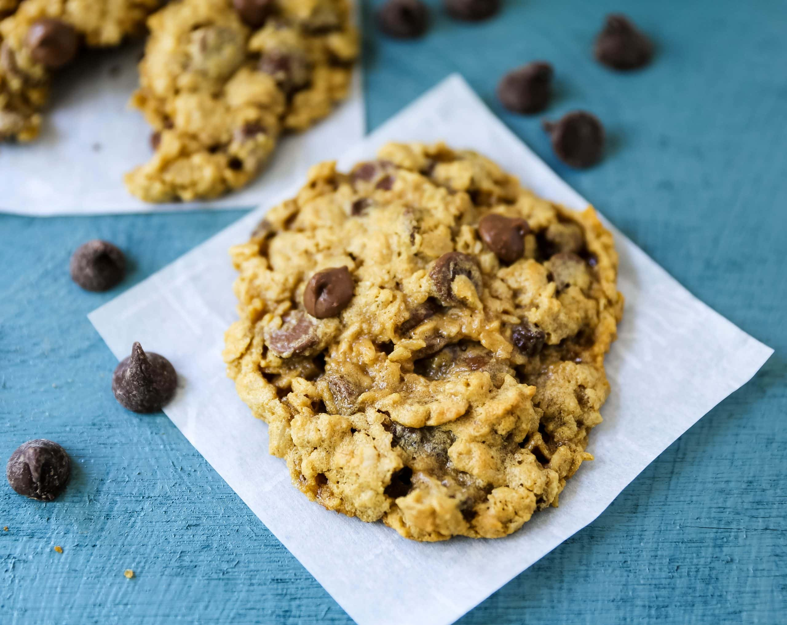

Oatmeal Chocolate Chip Cookie Recipe

Delicious, dairy-free, oatmeal chocolate chip cookies. Combine all of the ingredients and mix until all liquids have been
evenly distributed. Squeeze mixture by hand into balls and place 2 inches apart on a baking pan, no non-stick spray
necessary if the pan is non-stick. Bake at 400 degrees for 12-15 minutes. Let cool throughly after cooking
as the cookies are often fragile when they are still hot.
Ingredients:
- 1 cup flour
- 1 1/4 cup steele cut oats
- 1 cup chocolate chips
- 1/2 cup white sugar
- 1/2 cup brown sugar
- 1 teapsoon baking soda
- 1/2 teaspoon salt
- 1 egg
- 1/2 cup oil
- 2 teapsons vanilla extract
Steps:
- Pre-heat oven to 400 degrees
- Cover baking pan with parchment paper if a quick cleanup is desired
- Combine all dry ingedients until evenly mixed
- Add in all wet ingredients
- Stir until all wet ingredients have been evenly distributed
- Squeeze mix into balls of desired size and place 2 inches apart on baking tray
- Cook fr 12-15 minutes, then let cool before removing from pan